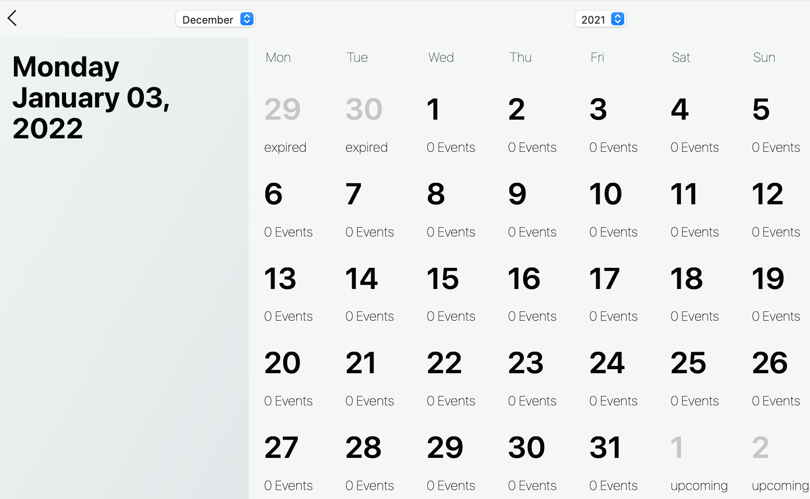
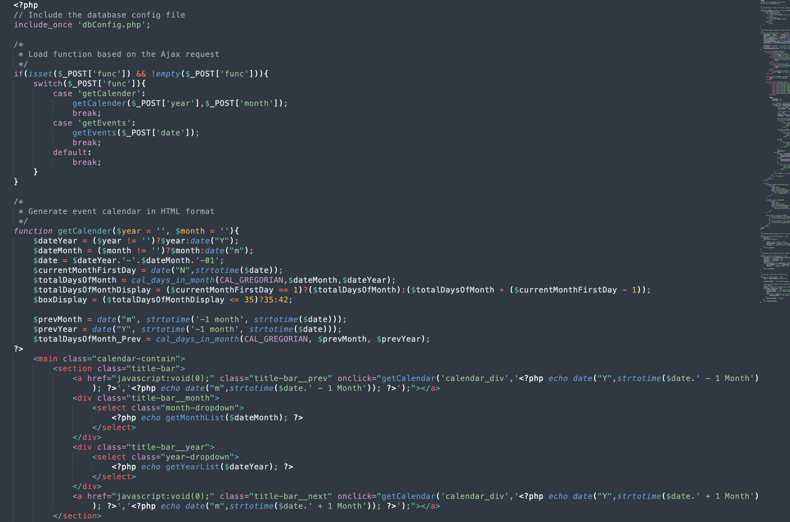
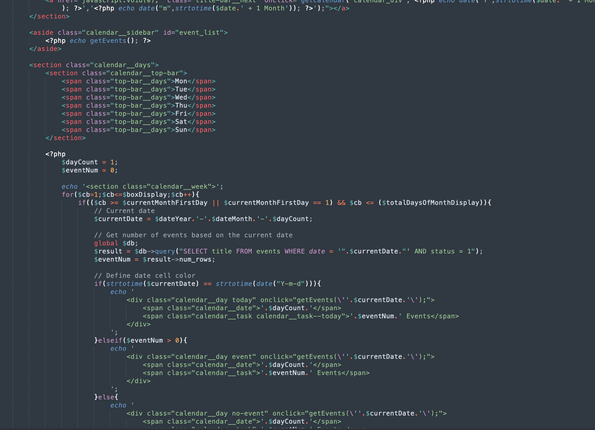
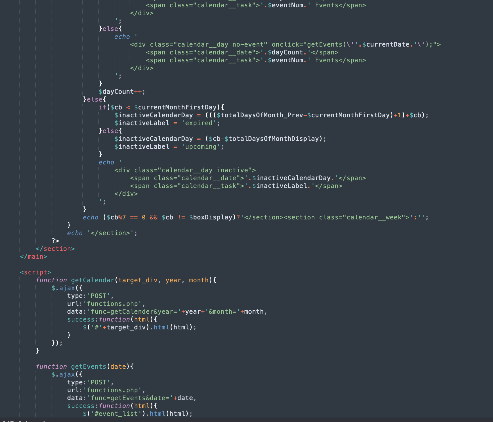
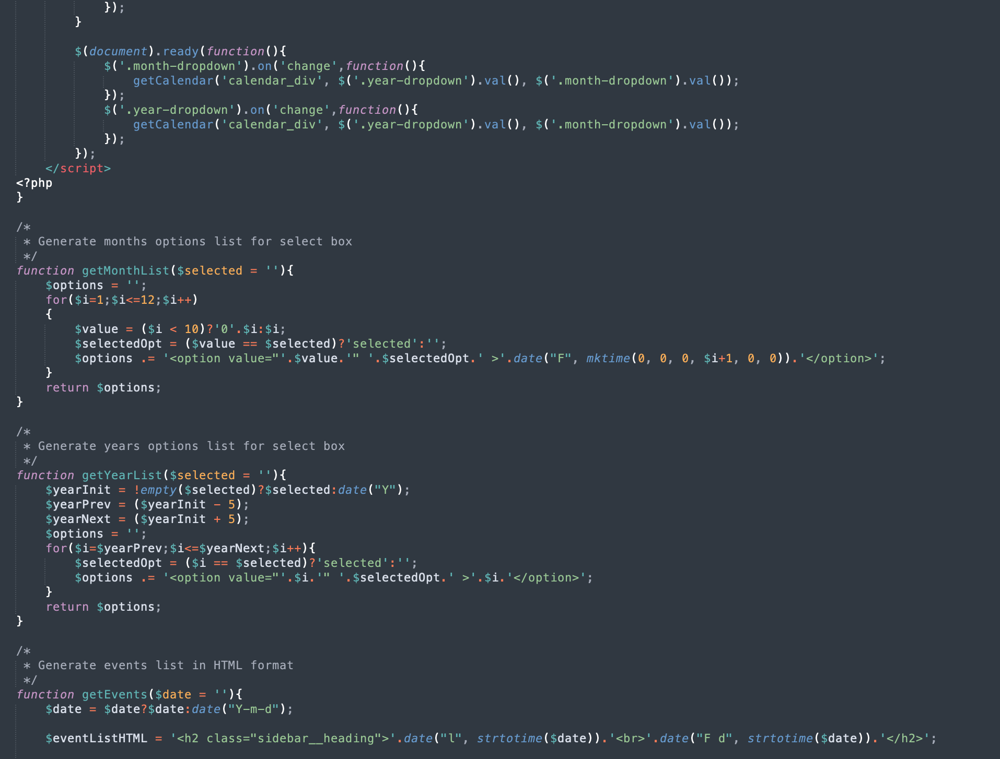
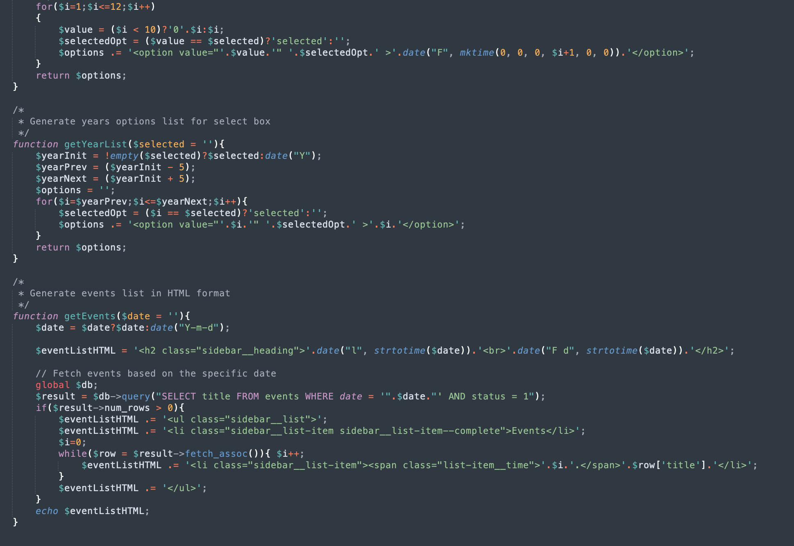
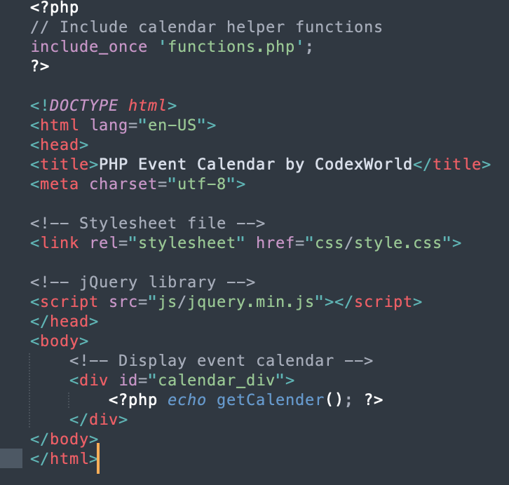
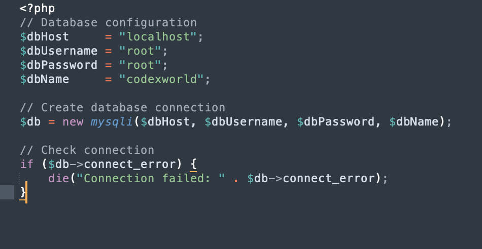

| Lab1 | Lab2 | Lab3 | Lab4 | Lab5 | Lab6 | Lab7 | Lab8 | Lab9 |
|---|
|
Ajax-планувальник справ getCalender() – Створення планера(календаря) на основі конкретного місяця та року. Отримати події з бази даних та додати події до комірки дати календаря. getMonthList() – Створити список параметрів місяців для поля вибору, яке використовується для спадного списку місяців. getYearList() – Створити список параметрів років для поля вибору, яке використовується для розкривного списку років. getEvents() – отримувати події за датою з бази даних і повертати список подій у форматі HTML.        |